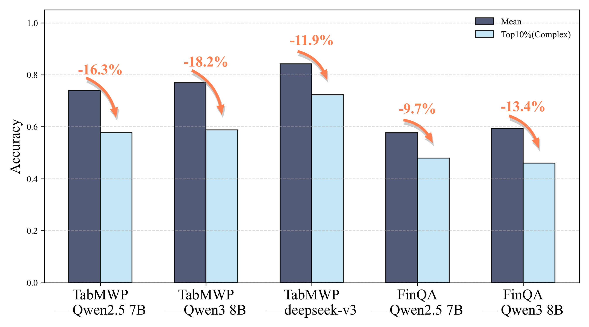
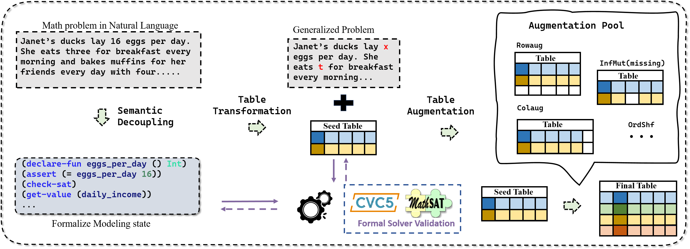
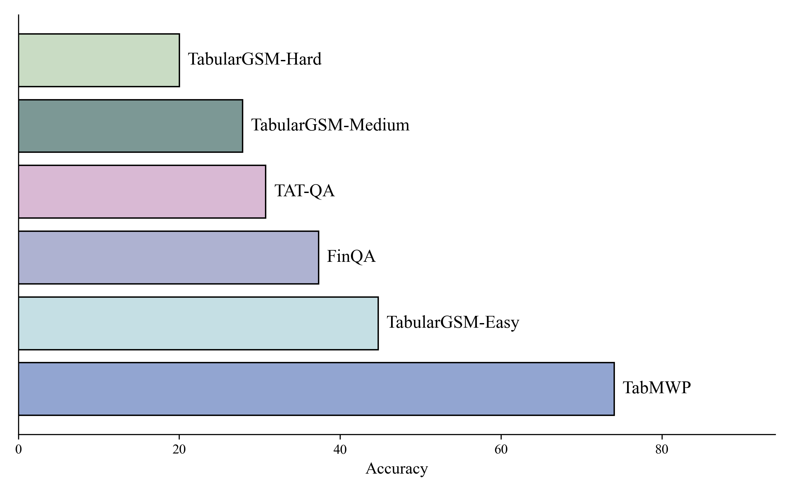
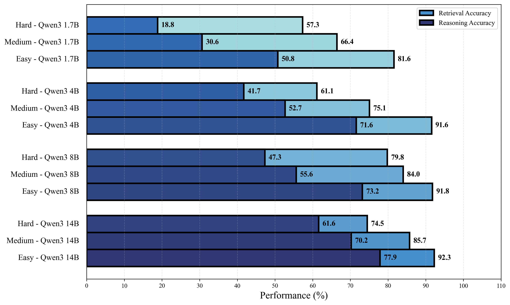
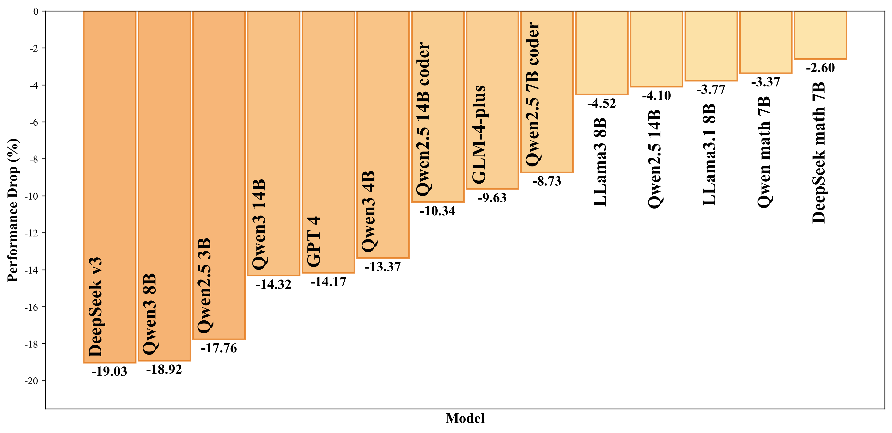
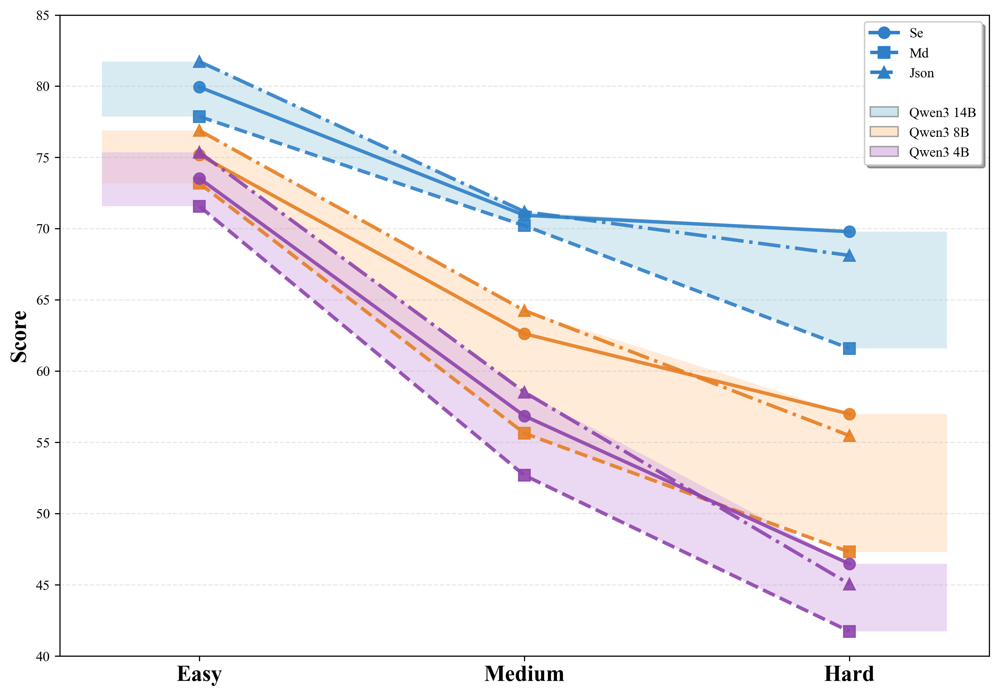
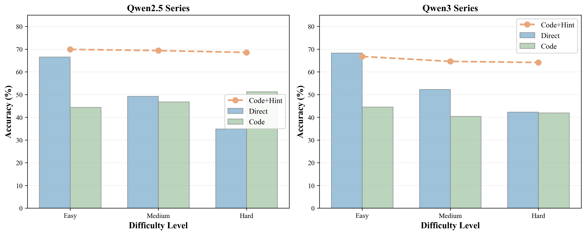

Why TabularMath Matters
Existing math reasoning benchmarks under-test structured retrieval, imperfect tables, and the gap between text and visual table reasoning.
Mathematical reasoning has long been a key benchmark for evaluating large language models, yet reasoning over tables remains underexplored. Real-world applications such as business intelligence require not only multi-step numerical reasoning with tables, but also robustness to incomplete or inconsistent information. To address this gap, TabularMath introduces AutoT2T, a neuro-symbolic framework that controllably transforms math word problems into scalable and verified tabular reasoning tasks, and builds a benchmark spanning table complexity, table quality, and table representation.
Table complexity and reasoning difficulty interact directly, and both dimensions hurt model performance.
Missing or contradictory table information still causes many strong models to produce confident but misleading answers.
Text-based tables are typically easier than image-based tables, even for multimodal models.

Performance on top-complexity questions drops much more sharply than on average samples, motivating a benchmark that stresses retrieval and reasoning jointly.
AutoT2T: Automated Text-to-Table Generation
AutoT2T converts math word problems into validated tabular reasoning tasks without manual table annotation.

AutoT2T first formalizes the problem, then transforms it into a seed table, and finally applies controllable augmentations for difficulty and robustness testing.
Semantic Decoupling
Large language models extract variables, constraints, and goals from natural-language math problems, while formal solvers verify satisfiability and consistency.
Table Transformation
The verified formal state is rewritten into a structured seed table with explicit fields, entity rows, and tabularized assignments.
Table Augmentation
Row augmentation, column augmentation, order shuffling, and information modification create controllable splits for complexity, retrieval stress, and robustness.
A Structured Testbed for Table Reasoning
The benchmark is built from transformed GSM8K-style problems and covers both text-based and rendered image-based tables.

Compared with prior math and table reasoning datasets, TabularMath emphasizes larger tables, coupled retrieval-and-reasoning, and robustness to flawed inputs.
The paper names the benchmark TabularMath. The released Hugging Face dataset is available as TabularGSM, covering easy, medium, hard, and imperfect settings for controlled evaluation.
Low structural variation with simpler retrieval.
Shuffled tables that increase localization difficulty.
Larger tables with row and column augmentation.
Missing or contradictory tables for robustness testing.
Three Core Experimental Messages
The experiments focus on complexity, table quality, and representation, with additional discussion on code-based reasoning and fine-tuning.

Retrieval Alone Is Much Easier Than Full Tabular Reasoning
When the retrieval target is made explicit, models perform much better. The major bottleneck emerges when retrieval is embedded inside multi-step reasoning.

Checking for Flawed Tables Comes with a Real Trade-off
Informing models that a table may be problematic improves discrimination, but also hurts accuracy on ordinary well-defined problems.

Structured Text Formats Beat Markdown on Harder Tables
JSON and serialized representations remain more reliable than Markdown, and the gap widens as table complexity increases.

Code Helps Less Than Clear Retrieval Guidance
Writing code does not automatically solve table reasoning; strong gains appear when the model is explicitly guided toward the right retrieval trajectory.
BibTeX
The citation below follows the current arXiv preprint metadata for
arXiv:2505.19563.
@article{tian2025tabularmath,
title = {TabularMath: Understanding Math Reasoning over Tables with Large Language Models},
author = {Tian, Shi-Yu and Zhou, Zhi and Dong, Wei and Yu, Kun-Yang and Yang, Ming and Cheng, Zi-Jian and Guo, Lan-Zhe and Li, Yu-Feng},
journal = {arXiv preprint arXiv:2505.19563},
year = {2025},
doi = {10.48550/arXiv.2505.19563},
url = {https://arxiv.org/abs/2505.19563}
}